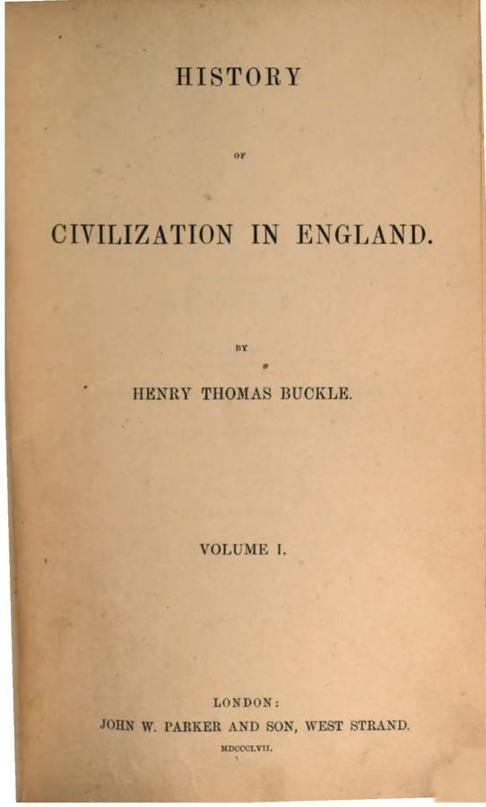
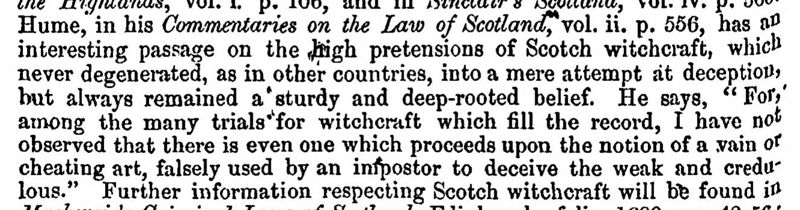
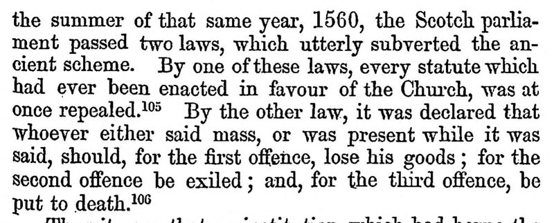
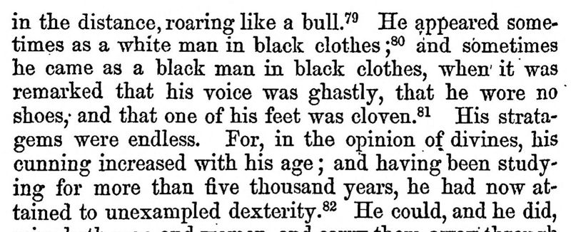

Agriculturists and the weather (pp. 344–345, 347)

English, from the page images. Highlighted: the argument Lecky summarises.
… If, again, we compare agriculturists with manufacturers, we shall see the operation of the same principle. To the cultivators of land, one of the most important circumstances is the weather, which, if it turn out unfavourable, may at once defeat all their calculations. But science not having yet succeeded in discovering the laws of rain, men are at present unable to foretell it for any considerable period; the inhabitant of the country is, therefore, driven to believe that it is the result of supernatural agency, and we still see the extraordinary spectacle of prayers offered up in our churches for dry weather or for wet weather … (pp. 344–345)
… just in the same way is the agriculturist more superstitious than the mechanic, because he is more frequently and more seriously affected by events which the ignorance of some men makes them call capricious, and the ignorance of other men makes them call supernatural. (p. 347)
Lecky’s “atmospheric changes, which man can neither predict nor control” condenses this; “control” is Lecky’s word, and Buckle’s emphasis is on the inability to predict. Buckle adds that the manufacturer, whose success depends on his own skill, “learns to rely solely upon his own energy”; Lecky uses that contrast for the town in his text.
The Spanish opera and the drought (p. 347, footnote)
… [the beginning is on p. 346; not read] … point of putting an end to the opera, because they “attributed the want of rain to the influence of that ungodly entertainment.” Swinburne’s Travels through Spain in 1775 and 1776, vol. i. p. 177, 2d edit. London, 1787.
This is the note Lecky calls “Buckle, vol. i. p. 347, note”. Lecky’s text says that “some divines having ascribed to it a period of pestilence and of drought, it was for a time abolished” (Spain); Buckle’s note, from Swinburne, speaks of the want of rain only. I do not know what the missing opening of the note says about the pestilence, so I cannot say whether Lecky’s “pestilence” comes from it or from elsewhere; the English-bishops example in the same note of Lecky’s is from Froude, not Buckle.
Witchcraft belief between the Restoration and the Revolution (p. 333, note 50)
English: vol. 1, p. 333, scan (the footnote to “The progress which the English intellect was now making towards shaking off ancient superstitions”).
… One of the most curious instances of this may be seen in the destruction of the old notions respecting witchcraft. This important revolution in our opinions was effected, so far as the educated classes are concerned, between the Restoration and the Revolution: that is to say, in 1660, the majority of educated men still believed in witchcraft; while in 1688, the majority disbelieved it. In 1665, the old orthodox view was stated by Chief-Baron Hale … Lord Campbell is mistaken in supposing (p. 563) that this was “the last capital conviction in England for the crime of bewitching.” So far from this, three persons were executed at Exeter for witchcraft in 1682. See Hutchinson’s Historical Essay concerning Witchcraft, 1720, pp. 56, 57. Hutchinson says: “I suppose these are the last three that have been hanged in England.” If, however, one may rely upon a statement made by Dr. Parr, two witches were hung at Northampton in 1705; and in “1712, five other witches suffered the same fate at the same place.” Parr’s Works, vol. iv. p. 182, 8vo, 1828. …
Lecky (ch. I, note 132): “Mr. Buckle places the scepticism a little earlier. He says: ‘This important revolution in our opinion was effected, so far as the educated classes are concerned, between the Restoration and Revolution; that is to say, in 1660 the majority of educated men still believed in witchcraft, and in 1688 the majority disbelieved it.’ (Vol. i. p. 333.)” The page number is right and the quotation is accurate apart from “opinion” for “opinions”, the missing “the” before “Revolution”, and punctuation. The same footnote is the source of Lecky’s sentence in the text above note 134, “Three witches had been executed in 1682; and others, it is said, endured the same fate in 1712”: Buckle gives Hutchinson for 1682 and, “if one may rely upon” Dr. Parr, five witches hanged at Northampton in 1712 (and two in 1705). Lecky’s “it is said” reflects Buckle’s doubt; the Hutchinson page shows that Hutchinson himself does not say it.
An eclipse puts an army to flight (p. 345, note 82)
English and French: vol. 1, p. 345, scan, footnote 82.
In Europe, in the tenth century, an entire army fled before one of those appearances, which would now scarcely terrify a child: “Toute l’armée d’Othon se dispersa subitement à l’apparition d’une éclipse de soleil, qui la remplit de terreur, et qui fut regardée comme l’annonce du malheur qu’on attendait depuis long-temps.” Sprengel, Hist. de la Médecine, vol. ii. p. 368. The terror inspired by eclipses was not finally destroyed before the eighteenth century … There probably never has been an ignorant nation whose superstition has not been excited by eclipses. For evidence of the universality of this feeling, see Symes’s Embassy to Ava, vol. ii. p. 296; … [a long list of travellers’ and historians’ citations follows].
Lecky (ch. I, note 41), attached to “In the tenth century a similar phenomenon put to flight an entire army”: “Buckle’s Hist. vol. i. p. 345 (note), where an immense amount of evidence on the subject is given.” Accurate: the footnote begins with the army of Otho, and its list of authorities on the universality of the terror of eclipses runs down the rest of the page. (Buckle’s source is Sprengel’s history of medicine, not read here.)
Not matched: “vol. i. p. 316”
Lecky’s ch. I note 70 refers to “Buckle’s History, vol. i. p. 316” for the belief, “in an early stage of civilisation”, that atmospheric changes result from the intervention of spirits. In this printing p. 316 (image n343) is about persecution and reason in seventeenth-century England (“As theology became more reasonable, it became less confident, and therefore more merciful”; Legat and Wightman burned in 1611). It says nothing of spirits and the weather. The subject is on pp. 344–345 (the passage transcribed above). So Lecky’s page is probably a slip or another edition’s; I give the nearby pages without altering his citation.
The growth of dissent: one twenty-third to one fourth (pp. 385–386, note 203)
English: vol. 1, pp. 385–386, scan and scan; footnote 203, which begins at the foot of p. 385 and ends on p. 386.
… According to a paper found in one of the chests of William III., and printed by Dalrymple (Memoirs, vol. ii. part ii., appendix to chapter i. p. 40), the proportion in England of conformists to nonconformists was as [p. 386:] 22½ to 1. Eighty-four years after the death of William, the dissenters, instead of comprising only a twenty-third, were estimated at “a fourth part of the whole community.” Letter from Watson to the Duke of Rutland, written in 1786, in Life of Watson, Bishop of Llandaff, vol. i. p. 246. Since then, the movement has been uninterrupted; and the returns recently published by government disclose the startling fact, that on Sunday, 31st March 1851, the members of the Church of England who attended morning service, only exceeded by one-half the Independents, Baptists, and Methodists who attended at their own places of worship. …
Lecky (ch. IV Part II, note 5): “See a note in Buckle, History of Civilisation, vol. i. p. 385”, for his sentence that “About the time when the act was passed, the dissenters were estimated at rather more than one twenty-third of the population of England; less than a century after they were estimated at one-fourth.” Accurate: Buckle’s 22½ to 1 and “a fourth part” 84 years after William’s death. (Lecky’s “about the time when the act was passed” puts the first estimate at the Toleration Act of 1689; Buckle dates it only to William’s reign.) The note begins at the foot of p. 385 and the figures are on p. 386.
The spiritual peers in the House of Lords (pp. 380–381, notes 186–188)
English: vol. 1, pp. 380–381, scan and scan.
… In the early and barbarous periods of our history, one-half of the House of Lords consisted of temporal peers; the other half of spiritual ones.186 By the beginning of the eighteenth century, the spiritual peers, instead of forming one-half of the upper house, had dwindled away to one-eighth;187 and, in the middle of the nineteenth century, they have still further shrunk to one-fourteenth:188 thus supplying a striking numerical instance of that diminution of ecclesiastical power, which is an essential requisite of modern civilization. …
187. See an analysis of the House of Lords, in 1713, in Mahon’s Hist. of England, vol. i. pp. 43–45; from which it appears that the total was 207, of whom 26 were spiritual. This includes the Catholics. 188. By the returns in Dod for 1854, I find that the House of Lords contains 436 members, of whom 30 belong to the episcopal bench.
Lecky (ch. V, notes 25 and 26, both reading “Buckle, Hist. of Civ., vol. i. pp. 380, 381”, attached to “In the reign of Henry III. the spiritual peers had formed one-half of the upper house; in the beginning of the eighteenth century they formed only one-eighth, and in the middle of the nineteenth century only one-fourteenth”): the pages and figures match. Buckle’s own figures are 26 of 207 (about one-eighth) in 1713 and 30 of 436 (about one-fourteenth) in 1854. Buckle’s “one-half” is for the “early and barbarous periods”, with a footnote (186) that, in and after the reign of Henry III, prelates often equalled or exceeded the temporal lords (120 prelates to 23 temporal lords summoned in 49 Henry III, which he calls “an extreme case”); “the reign of Henry III” is Lecky’s dating of Buckle’s “one-half”.
Revolutions and madness (p. 424, note 316)
English: vol. 1, p. 424, scan, footnote 316 (attached to a passage on Burke).
All great revolutions have a direct tendency to increase insanity, as long as they last, and probably for some time afterwards; but in this, as in other respects, the French revolution stands alone in the number of its victims. On the horrible, but curious subject of madness, caused by the excitement of the events which occurred in France late in the eighteenth century, compare Pritchard on Insanity in relation to Jurisprudence, 1842, p. 90; his Treatise on Insanity, 1835, pp. 161, 183, 230, 339; Esquirol, Maladies mentales, vol. i. pp. 43, 53, 54, 66, 211, 447, vol. ii. pp. 193, 726; Feuchtersleben’s Medical Psychology, p. 254; Georget, de la Folie, p. 156; Pinel, Traité sur l’aliénation mentale, pp. 30, 108, 109, 177, 178, 185, 207, 215, 257, 349, 392, 457, 481; Alison’s Hist. of Europe, vol. iii. p. 112.
Lecky’s ch. I note 64 says only “Buckle’s Hist., vol. i. p. 424, note”, attached to “Madness is always peculiarly frequent during great religious or political revolutions”. Buckle’s note supports that statement, and gives (above) a list of medical authorities for the madness caused by the French Revolution. Lecky’s sentence is more general than Buckle’s (he adds “religious”).
The French Protestants and the Catholic worship (pp. 509–510, notes 138–143)
English: vol. 1, pp. 509–510, scan and scan (image = page + 29 here, not the + 27 of the earlier pages of this scan). Lecky cites pp. 509–523; only the first two pages were read.
… For, certain towns having been, perhaps imprudently, placed under their control, they exercised their authority in them with the most wanton insolence. At La Rochelle, which for importance was the second city in the kingdom, they would not permit the Catholics to have even a single church in which to celebrate what for centuries had been the sole religion of France, and was still the religion of an enormous majority of Frenchmen.140 … In 1619, they ordered in their general assembly at Loudon, that in none of the Protestant towns should there be a sermon preached by a Jesuit, or indeed by any ecclesiastical person commissioned by a bishop.141 In another assembly, they forbade any Protestant even to be present at a baptism, or at a marriage, or at a funeral, if the ceremony was performed by a Catholic priest.142 And, as if to cut off all hope of reconciliation, they not only vehemently opposed those intermarriages between the two parties … but they publicly declared, that they would withhold the sacrament from any parents whose children were married into a Catholic family.143 …
Lecky (ch. IV Part II, text above note 51): “In France, when the government of certain towns was conceded to the Protestants, they immediately employed their power to suppress absolutely the Catholic worship, to prohibit any Protestant from attending a marriage or a funeral that was celebrated by a priest, to put down all mixed marriages, and to persecute to the full extent of their power those who had abandoned their creed.” Note 51: “Much evidence of this is collected in Buckle, vol. i. pp. 509–523.” The first three items (suppression of Catholic worship at La Rochelle, the ban on attending a priest’s marriage or funeral, and opposition to mixed marriages) are on these two pages; Buckle’s sources are Capefigue’s Richelieu, Benoist’s Histoire de l’Édit de Nantes and Quick’s Synodicon in Gallia, which I have not checked. Persecution of those who had abandoned the Protestant creed is not on pp. 509–510 and may be on the later pages. Buckle says “perhaps imprudently”, and does not say “immediately”; and he attributes the measures to the Protestant clergy and assemblies, not to the towns’ governments as such.
The repeal of 1736, Wesley, and a witch burned in Spain (p. 334, note 50 continued)
English: vol. 1 (1857), p. 334, scan; the end of Buckle’s long footnote 50, which begins on p. 333 (see above).
… Wesley, who had more influence than all the bishops put together, says: “It is true, likewise, that the English in general, and, indeed, most of the men of learning in Europe, have given up all accounts of witches and apparitions as mere old wives’ fables. I am sorry for it. … The giving up witchcraft is, in effect, giving up the Bible. … But I cannot give up, to all the Deists in Great Britain, the existence of witchcraft, till I give up the credit of all history, sacred and profane.”
However, all was in vain. Every year diminished the old belief; and in 1736, a generation before Wesley had recorded these opinions, the laws against witchcraft were repealed, and another vestige of superstition effaced from the English statute-book. See Barrington on the Statutes, p. 407; Note in Burton’s Diary, vol. i. p. 26; Harris’s Life of Hardwicke, vol. i. p. 307.
To this it may be interesting to add, that in Spain a witch was burned so late as 1781. Ticknor’s Hist. of Spanish Literature, vol. iii. p. 238.
Lecky cites this page twice. In ch. I, note 4 (“See also Buckle’s History of Civilisation, vol. i. p. 334, note”) it supports his statement that in Spain “a sorcerer was burnt as late as 1780”. Buckle says 1781, citing Ticknor; Lecky’s 1780 is left as printed. (Michelet, whom Lecky cites elsewhere for the same fact, gives yet another year: see the Michelet page.) In ch. I, note 134 (“Compare Hutchinson, p. 57, and Buckle, vol. i. p. 334”) the page backs the repeal of the witchcraft laws in 1736; Lecky’s quotation of Wesley in his main text (“the giving up witchcraft is in effect giving up the Bible”) is also on this page, where Lecky presents it as Wesley’s preface of 1768.
Scottish witchcraft “never degenerated” into imposture (vol. II, pp. 189–190)
English: vol. II (London: Parker, 1861), pp. 189–190 and footnote, scans n224–n225.

[p. 189] Even the belief in witchcraft, one of the blackest superstitions which has ever defaced the human mind, has been affected by these peculiarities; and it has been well observed, that while, according to the old English creed, the witch was a miserable and decrepit hag, the slave rather than the mistress of the demons which haunted her, she, in Scotland, rose to the dignity of a potent sorcerer, who mastered the evil spirit, and, forcing it to do her will, spread among the people a far deeper and more lasting terror.
[p. 190, footnote] … Hume, in his Commentaries on the Law of Scotland, vol. ii. p. 556, has an interesting passage on the high pretensions of Scotch witchcraft, which never degenerated, as in other countries, into a mere attempt at deception, but always remained a sturdy and deep-rooted belief. He says, “For, among the many trials for witchcraft which fill the record, I have not observed that there is even one which proceeds upon the notion of a vain or cheating art, falsely used by an impostor to deceive the weak and credulous.”
Lecky’s ch. I note 145 (“The very remarkable fact, that no cases of imposture have been detected in Scotch witch-trials, is noted by Buckle. (Vol. ii. pp. 189, 190.)”) gives the right pages. The words are not Buckle’s own but those of the jurist David Hume (the philosopher’s nephew), and they say something narrower than Lecky’s paraphrase: no Scottish trial charged anyone with witchcraft as a fraud on the credulous. That is a fact about the indictments, not proof that no witch was an impostor. Buckle’s “well observed” sentence on p. 189 paraphrases J. Hill Burton’s Criminal Trials in Scotland, vol. i, pp. 240–243, quoted in the same footnote.
The Scottish laws of August 1560 (vol. II, p. 231)
English, with the Scots of the Act in Buckle’s footnotes: vol. II (1861), p. 231, scan n266.

… the summer of that same year, 1560, the Scotch parliament passed two laws, which utterly subverted the ancient scheme. By one of these laws, every statute which had ever been enacted in favour of the Church, was at once repealed. By the other law, it was declared that whoever either said mass, or was present while it was said, should, for the first offence, lose his goods; for the second offence be exiled; and, for the third offence, be put to death.
[footnote 106] “That na maner of persoun nor personis say mess nor zit heir mess nor be p[rese]nt thairat vnder the pane of confiscatioun of all thair gud movable and vnmovable and pvneissing of thair bodeis at the discretioun of the magistrat within quhais jurisdictioun sik personis happynis to be apprehendit for the first falt: Banissing of the Realme for the secund falt, and justifying to the deid for the thrid falt.” Ibid. [Acts of the Parliaments of Scotland, 1814], 24th August 1560, vol. ii. p. 535.
Lecky’s vol. II ch. IV note 49 (“Buckle, Hist., vol. ii. p. 231”) matches, and his sentence (“under pain of the confiscation of his goods for the first offence, of exile for the second, and of death for the third”) follows Buckle. The Act itself, quoted in Buckle’s footnote (read on the image; Buckle prints the record’s contractions, expanded here), adds for the first offence “punishing of their bodies at the discretion of the magistrate”, which both Buckle’s text and Lecky leave out.
The Scottish clergy, curses and the Devil (vol. II, pp. 349–369)
English: vol. II (1861), chapter “An examination of the Scotch intellect during the seventeenth century”, pp. 349 and 368, scans n384 and n403.

[pp. 348–349] … they also gave out that a word of theirs could hasten the moment of death, and by cutting off the sinner in his prime, could bring him at once before the judgment-seat of God. Utterly horrible as such a pretension now appears, it was made, not only with impunity, but with advantage; and numerous instances are recorded, in which the people believed that it was strictly enforced.
[p. 368] … He appeared sometimes as a white man in black clothes; and sometimes he came as a black man in black clothes, when it was remarked that his voice was ghastly, that he wore no shoes, and that one of his feet was cloven. His stratagems were endless. For, in the opinion of divines, his cunning increased with his age; and having been studying for more than five thousand years, he had now attained to unexampled dexterity.
Lecky’s ch. I note 144 praises Buckle’s “noble description of the Scotch Kirk” and sends the reader to “pp. 349–369” for “the multitude of miracles and apparitions of Satan that were believed”. In this edition those pages run from John Welsh’s supper-table curse (a young Catholic who made faces at him “suddenly fell, sank under the table, and died there”, p. 349, OCR) to the Devil’s many disguises (pp. 367–369): Lecky’s range fits. Buckle’s footnote to the five thousand years (OCR only) quotes Samuel Rutherford: “The acquired knowledge of the Devill is great, hee being an advancing student, and still learning now above five thousand yeares.”
Editor’s notes on this page
In note 167 Lecky says Buckle ascribes the superstition of the country, as against the town, “chiefly to the fact that agriculturists are dependent for their success upon atmospheric changes, which man can neither predict nor control”. This is Buckle’s argument almost exactly, and he draws the same contrast of sailors and soldiers that Lecky does not mention. In note 150 Lecky cites a footnote on p. 347 for the Spanish divines who ascribed drought to the opera; the end of that footnote is on the page.
Further down the rabbit hole
Sources that Lecky cites in the notes next to the ones that cite this page.
- Hutchinson, An Historical Essay concerning WitchcraftCounting the English witch-trials, and the last three hanged
- Garinet, Histoire de la Magie en FranceA history of magic in France, from the Frankish kings to the author’s own day
- Madden, PhantasmataAn Irish doctor’s history of delusions, and the witch-burnings in an Alpine valley
- Naudé, Apologie pour tous les grands personnages qui ont esté faussement soupçonnez de magieA librarian clears the great men of magic: Pope Sylvester, Pietro d’Abano, Agrippa
- Simancas, De Catholicis InstitutionibusAn inquisitor’s handbook: no faith with heretics, and torture
- Bodin, Démonomanie des SorciersThe great lawyer who wrote the witch-hunters’ handbook


Backlinks
Every place in Rationalism in Europe that links to this page (generated automatically when the site is built).